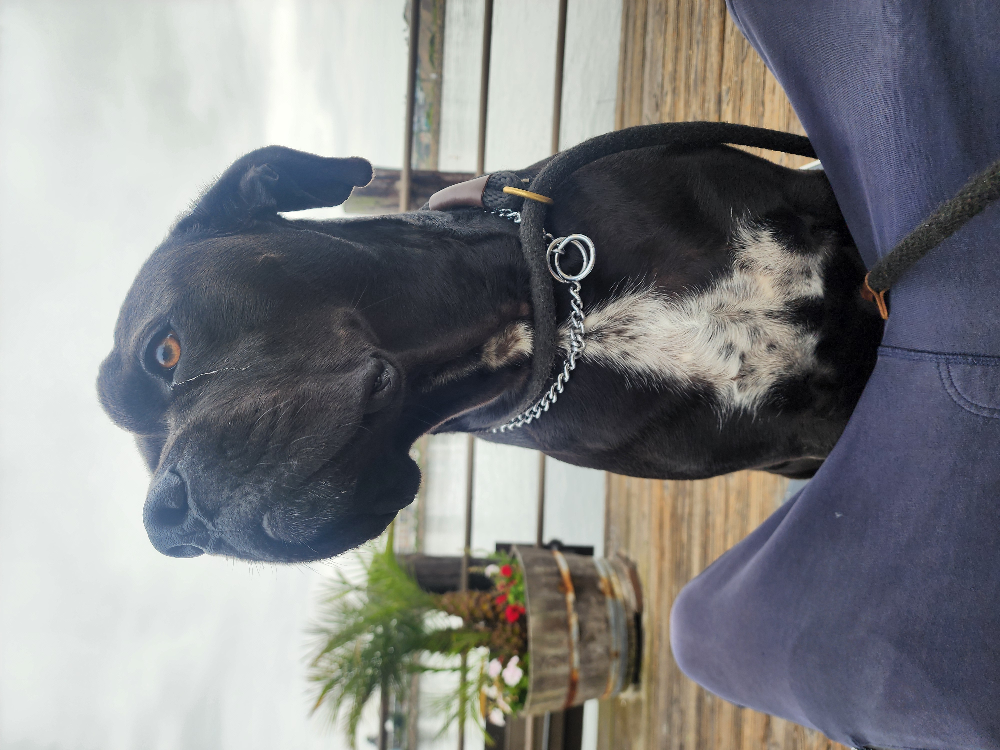
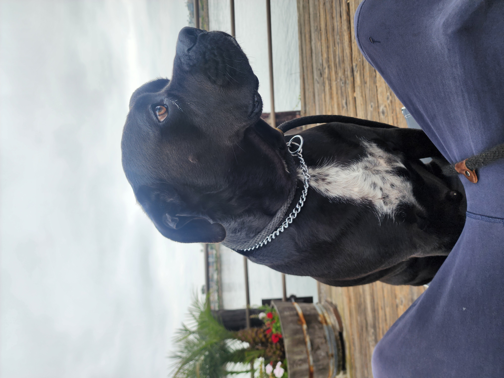

After a continent-wide investigation spanning 23 countries, 14 independent laboratories, and one very thorough belly-rub analysis, the results are in. His name is Freddy. He is perfect. This is not a drill.
TORONTO, ON - EXCLUSIVE REPORT
We need to talk about Freddy.
For years, the title of Goodest Boy in All of North America has remained unclaimed. Experts said it was impossible. Too many variables. Too many good boys. The North American Canine Excellence Board (NACEB) had reviewed over 74 million candidates since 2019 and refused to crown a winner, citing "unprecedented levels of goodness across the continent" and "an inability to quantify tail wags with existing technology."
That changed this morning.
At approximately 9:47 AM EST, a unanimous panel of 12 internationally recognized dog scientists, 3 retired mail carriers, and one guy who just really knows dogs confirmed what many in the Greater Toronto Area had long suspected: a dog named Freddy, believed to be of unknown but extremely prestigious lineage, has been formally declared the Goodest Boy in All of North America.
The announcement sent shockwaves through the global canine community.

What makes Freddy's achievement so remarkable is that by conventional metrics, he should not have even been in the running. He is, by all accounts, profoundly lazy.
Sources close to Freddy confirm he sleeps an average of 17.4 hours per day. He has never once voluntarily retrieved a ball. When a stick is thrown in his presence, he watches it arc through the air with a look best described as "polite disinterest," then returns his gaze to whoever threw it as if to say, "And what was the point of that?"
He does not fetch. He has never fetched. When asked to fetch, he lies down. This is not defiance. It is philosophy.
Yet despite this radical commitment to rest, Freddy's listening scores are off the charts. In standardized testing, he demonstrated a 100% comprehension rate across all verbal commands, emotional tones, and subtle shifts in household energy. He can detect when someone is sad from three rooms away. He will sit beside you without being asked. He will not try to fix it. He will simply be there. Experts call this "advanced emotional attunement." Freddy's family calls it "just Freddy."

We need to address this directly because it is going to dominate the news cycle for the next several weeks and the public deserves the full story.
Freddy single-handedly eliminated an invasive duck species from the state of California.
In 2024, California's Department of Fish and Wildlife identified a surge in the Ruddy-Backed Whistling Teal, an aggressive non-native duck species that had been devastating wetland ecosystems from Sacramento to San Diego. The species had no natural predators. Trapping programs failed. Habitat modification was too slow. State officials were, in the words of one biologist, "completely and totally cooked."
Then Freddy visited California.
What happened next has been described by the U.S. Fish and Wildlife Service as "inexplicable," by National Geographic as "the most significant single-animal conservation event in recorded history," and by Freddy's family as "yeah he does that."
Over the course of a single 11-day vacation, Freddy personally caught, chased, or psychologically intimidated every last Ruddy-Backed Whistling Teal out of the state of California. Not some of them. All of them. The species has not been detected in California since.
The California incident initially drew skepticism from the scientific community. How could one dog, described by his own family as "aggressively lazy," eliminate an entire invasive species? But the data is unambiguous. Before Freddy's visit: an estimated 12,000 Ruddy-Backed Whistling Teals across California waterways. After: zero. The correlation is 1:1. There is no other variable.
When reached for comment, Freddy was asleep.
For those questioning the methodology, the NACEB's Goodest Boy evaluation includes 247 weighted factors across six core categories:
Loyalty (weighted 30%): Freddy scored a perfect 10. He has never once left the room when someone was crying. He has also never left the room when someone was eating cheese. The panel counted both.
Listening (weighted 25%): Perfect 10. Freddy hears everything. He responds to his name, to "want a treat?", to the sound of a cheese wrapper from any floor of the house, and to the emotional state of every human within a 50-foot radius. He does not, however, respond to "fetch." The panel ruled this was a feature, not a bug.
Softness (weighted 15%): 9.8. Independent fur analysts confirmed Freddy's coat exceeds the softness threshold previously thought to be the theoretical maximum for dogs in the Northern Hemisphere.
Bravery (weighted 10%): 10. See: The Duck Situation.
Vibes (weighted 10%): 10. The panel noted that simply being in Freddy's presence "makes you feel like everything is going to be fine, even when it is clearly not."
Fetch Compliance (weighted 10%): 0. Freddy received a zero in this category and still won the overall title by the largest margin in NACEB history. The panel has since voted to remove fetch compliance from future evaluations, calling it "an outdated metric that penalizes visionaries."
As the newly crowned Goodest Boy in All of North America, Freddy is entitled to a lifetime supply of treats (which he has reportedly already been receiving), an official certificate (which he will sleep on), and a ceremonial golden leash (which he will refuse to walk in).
He is also expected to receive calls from several heads of state, the United Nations Environment Programme regarding the duck situation, and at least one major Netflix docuseries producer.
Multiple governments have reportedly inquired about deploying Freddy to address invasive species crises in their own countries. Australia's Department of Agriculture has submitted a formal request regarding cane toads. Japan has expressed interest regarding the Asian giant hornet. Freddy's team has declined all inquiries, stating he "already has plans" and "is busy that day" and "every day."
Freddy was unavailable for comment at press time. He was napping on the couch in a position that should not be physically possible. He will continue napping. He is the Goodest Boy in North America and he does not owe you an interview.
Certified by the North American Canine Excellence Board. Unanimous decision. No appeals. He is a very good boy. The best, actually. It is official now. Stop crying.
This article has been reviewed and fact-checked by the I Love Toronto investigative unit. Freddy was not harmed, disturbed, or woken up during the reporting of this story. All ducks mentioned were invasive and had it coming. The white chest patch/map theory remains under peer review.